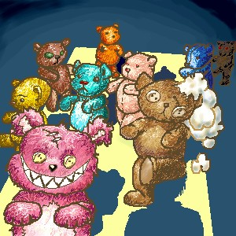

Segui em caminho reto, mas foi por pouco tempo. Caí num buraco. Gritei e quando cheguei ao fim, cai em algo macio. Bom, eu não me machuquei. Comecei a ouvir uns barulhos. Seriam ratos? Seriam brinquedos? É, tipo isso. Na verdade eu caí em um poço de ursos de pelúcias. E eles andavam. E não eram amigáveis.
E assim, os ursos de pelúcia tiveram um jantar.